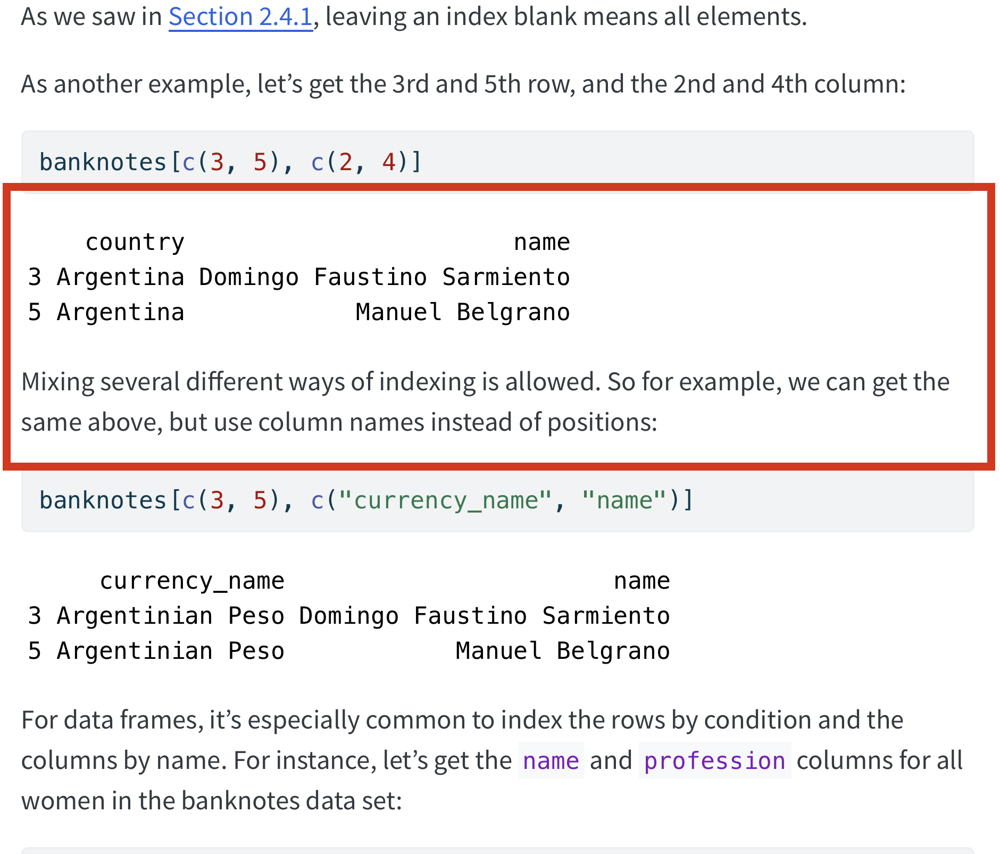

4 Audit of R Basics Workshop
The following are some notes that I generated in an accessibility review of the R Basics workshop. Ultimately, my goal is to identify which of these need fixing and find ways to fix them without adding friction to the workshop writing process. I was helped in this audit by Katherine Brafford, who is often in Datalab and who uses a screen reader to interact with her computer.
4.1 Notes
- I’m finding that tab controls skip the content and just go to buttons.
- We don’t have alt text for images
- We have popup previews of the linked page when hovering on a link internal to the reader. I am not sure how this would interact with a reader or keyboard control.
- All the code blocks have (often-)superfuous “copy to clipboard” buttons.
- These are “code with copy” chunks. Can we convert them to not have copy?
- “content information” in the Landmarks rotor goes to the footer: pretty useless IMO
4.1.1 Katherine’s thoughts:
- Uses JAWS screen reader
- NVDA: free and fairly good - probably the best for testing
- Narrator is windows’ built-in: almost nobody uses it
- Talkback and Voiceover on Mac both good
- “Good that we use headings”
- Seem to be in right place and level (e.g.,
<h4>) - Jump between by “h” and keypad numbers for heading levels
- Seem to be in right place and level (e.g.,
- Next and back are links like other links on page
- Better to have next and back buttons rather than links?
- Link labeling:
- link list has a lot that are called, e.g., “here” and “anchor”
- Images
- Many not labeled
- Ch 1.2: description behind first graphic literally describes image, which is a repeat of figure caption
- Next is following “You can make R compute the sum by typing the code 2 + 2 after the prompt and then pressing the Enter key. Your code and the result from R should look like this:” and is an image of R saying 2 plus 2 is 4.
- Katherine prefers text over images, but the image at least needs a description
- “Script error”s abound, seem related to math formatting (MathJax)
- Search bar should be called search, give an idea of what it does
- The table of contents being split makes it hard to navigte and use.
- ToC has a heading level but the chapter list does not, makes it harder to find the navigation buttons
- Good to have “Navigation” heading so it is findable from link list
- “Form field” inputs: not very useful because there are so many “copy to clipboard” buttons
- Katherine likes button (not link) for next and back
- Katherine prefers
gt()function overprint.df() - Can we get an alternate text description of tables (e.g. Section 3.1.2)? The reader doesn’t make sense when encountering text tables (this is why Katherine uses
gt()). - Paragraphs are broken up in a weird way: 3.1.2 “DATA[ROWS, COLUMNS] For instance, let’s get the first 3 rows and all columns of the banknotes data:” is one paragraph. Also, this red box is one paragraph: 